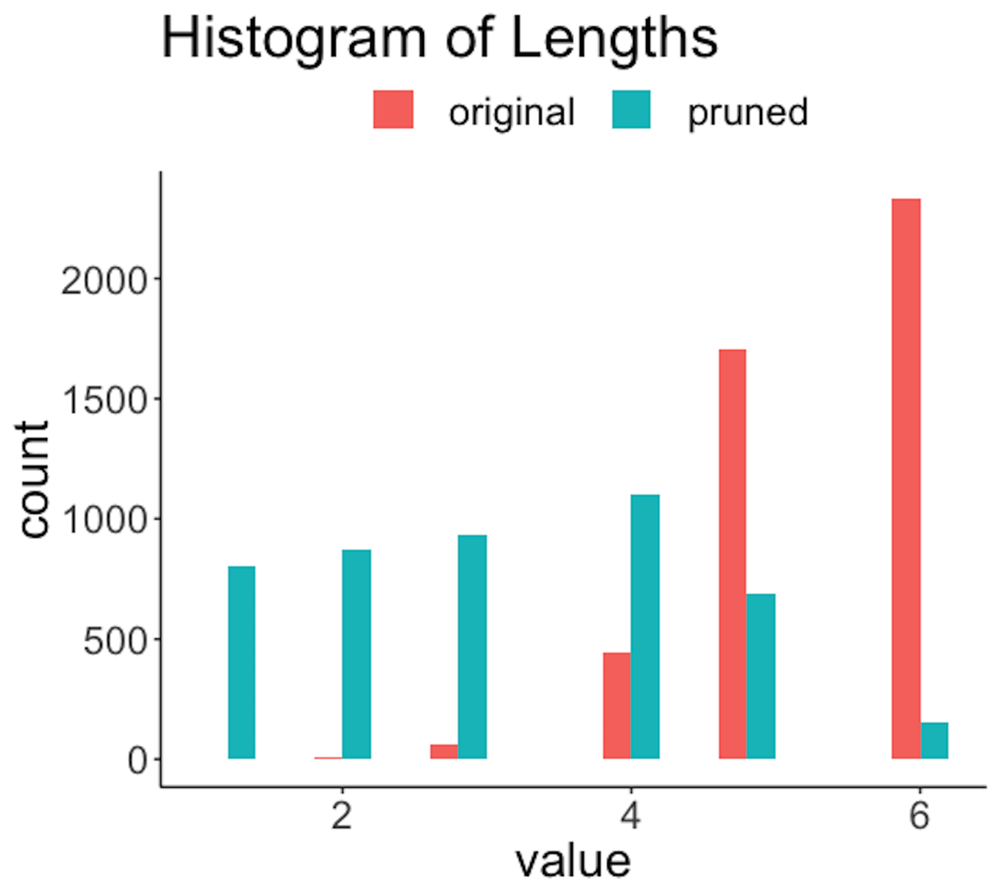
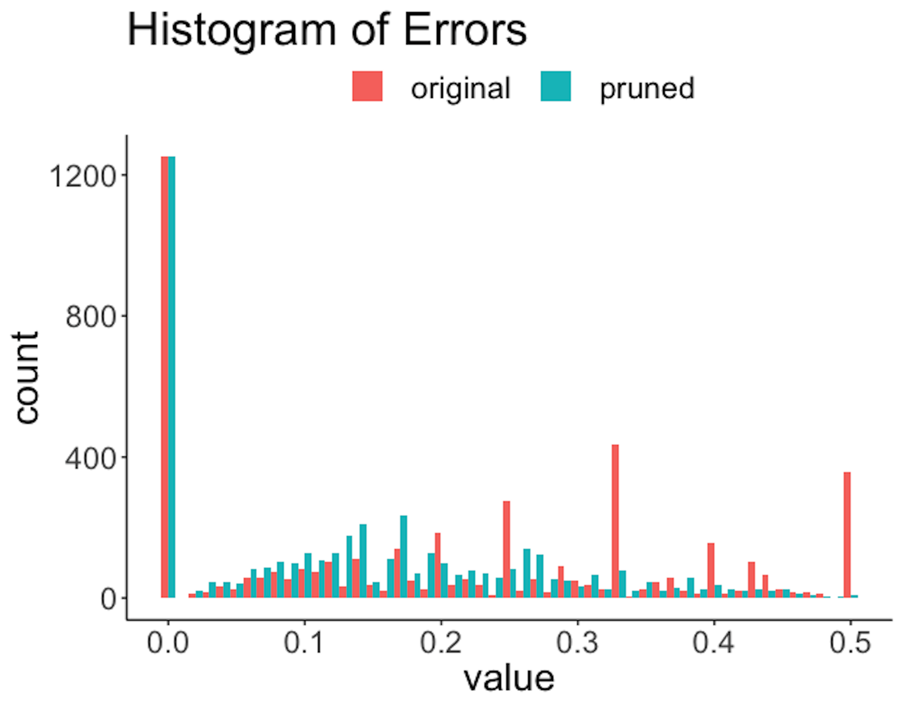

inTrees
Rationale and formulation
What is a variable? Given an Excel file, we call the column that is titled as the name Age as a variable. And in fact, as a convention, in an Excel file or a data table in some common formats, we usually do not doubt that each column implies a variable. These “variables,” or entities, may have definitions in the domain of common sense (i.e., where we take things for granted), but they may not be the best candidates to characterize the system under study. Recall that in Chapter 2 we mentioned that the goal of modeling begins with abstraction—“identification of a few main entities from the problem,” and continues to “characterize their relationships.” If we comfortably play the data using the variables that have been defined without examination, we lose sight of a large territory of data analytics—identification of a few main entities from the problem that can sufficiently characterize the problem.
Now let’s switch to the domain of linear regression. A variable is an abstract entity in the equation of the linear regression model257 I.e., denoted as \(x_i\)., multiplied by a regression coefficient258 I.e., denoted as \(\beta_i\).. It stands in the equation in parallel with other variables, which jointly determines an outcome variable. This form implies that the difference between the variables are only numeric, characterized by the differences in signs and magnitudes (i.e., encoded in the regression coefficients), but not in semantics. Now comes a reflection: in order for a linear regression model to work out in an application, shouldn’t we ensure that the variables could be lined up in this manner of apposition259 Apposition—with a little abuse of the term—the grammar used in the linear regression to line up the variables in a parallel and additive manner.?
\[\begin{equation} y = \ldots + \underbrace{\beta_1 x_1}_{\text{A}} + \underbrace{\beta_2 x_2}_{\text{p}} + \underbrace{\beta_3 x_3}_{\text{p}} + \underbrace{\beta_4 x_4}_{\text{o}} + \underbrace{\beta_5 x_5}_{\text{s}} + \underbrace{\beta_6 x_6}_{\text{i}} + \underbrace{\beta_7 x_7}_{\text{t}} + \underbrace{\beta_8 x_8}_{\text{i}} + \underbrace{\beta_9 x_9}_{\text{o}} + \underbrace{\beta_{10} x_{10}}_{\text{n}} + \ldots \tag{102} \end{equation}\]
In other words, if the variables in the domain of common sense are not semantic equals, the application of linear regression on them is questionable. For example, it is probably common sense to line up a few genetic factors in Eq. (102), but could we also put Age as another variable that stands among the genetic factors in a line? In many contexts, we need to work out a better definition of the variable, i.e., it is not uncommon to define two new variables such as \(\text{Age} \leq 65\) and \(\text{Age} > 65\) instead of using the variable Age directly. Sometimes we use the variable Age in a model because it is named as Age. But what is Age? When we put a variable in a model, it is destined to be redefined, either before the analysis, or after, or along the way.
This effort to redefine variables could be automated by tree models. Recall that the tree models use rule-based semantics. Rules like \(\text{Age} \leq 65\) and \(\text{Age} > 65\) sometimes yield statistically significant and semantically meaningful entities, perfect candidates for variable redefinition purposes. And a tree is essentially a collection of multiple rules. If we could run tree models on a dataset first, we could extract those rules, and each rule is a new variable.
This is the starting point of inTrees. It uses the random forest to collect potentially useful rules260 This step automates the variable redefinition process., then puts the rules as the variables into a model261 I.e., a classification/regression model. This step automates the integration of the variable redefinition with modeling. and employs a computational process to select the final variables. In this way, we have the best parts of both methods: the rules capture the variable-level patterns in the data, and the model (i.e., a regression model) captures the synthetic effects of these patterns in predicting an outcome variable. Note that inTrees is not the first of its kind. It follows a few pioneers such as the rulefit and modifies existing efforts according to some in-field experiences.
Theory and method
The inTrees uses a framework that is shown in Figure 186. In the following text, we introduce each functionality of the inTrees framework.
Figure 186: The pipeline of inTrees
Consider the dataset that has \(2\) predictors and \(7\) instances as shown in Table 54.
Table 54: Example of a dataset with \(7\) instances
| ID | \(x_1\) | \(x_2\) | Class |
|---|---|---|---|
| \(1\) | \(1\) | \(1\) | \(C0\) |
| \(2\) | \(1\) | \(0\) | \(C1\) |
| \(3\) | \(0\) | \(1\) | \(C1\) |
| \(4\) | \(0\) | \(0\) | \(C1\) |
| \(5\) | \(0\) | \(0\) | \(C0\) |
| \(6\) | \(0\) | \(0\) | \(C0\) |
| \(7\) | \(0\) | \(0\) | \(C0\) |
Extract rules. The inTrees uses a tree emsemble learning method to grow many trees. A decision tree can be dissembled into a set of rules. For example, suppose that a random forest model has been built on the dataset shown in Table 54. One tree of this random forest model is shown in Figure 187. Three rules (each rule corresponds to a leaf node) are extracted and shown in Table 55.
 Figure 187: Example of a decision tree; leaf nodes (a.k.a., decision nodes) are shadowed in gray.
Figure 187: Example of a decision tree; leaf nodes (a.k.a., decision nodes) are shadowed in gray.
Each rule is evaluated by three criteria: the length of a rule that is defined as the number of variables in the rule; the frequency of a rule that is the proportion of data points in the dataset that meet the condition of the rule, and the error rate of a rule. For classification problems, the error rate of a rule is the number of data points incorrectly identified by the rule divided by the number of data points that meet the condition of the rule.
For regression problems, the error rate of a rule is the mean squared error (MSE) , that is defined as
\[MSE = \frac{1}{N}\sum_{i=1}^N \left(y_i - \bar{y}\right)^2,\]
where \(N\) is the number of data points in the leaf node that corresponds to the rule, \(y_i\) is the value of the outcome variable of the \(i^{th}\) data point, and \(\bar y\) is the average of the outcome variable (i.e., as the prediction at the leaf node).
Based on these three criteria, the evaluation of the three rules is shown in Table 55.262 Apply each rule on the data points in Table 54.
Table 55: Evaluation of the three rules extracted from the tree in Figure 187
| ID | Rule | Length | Frequency | Error |
|---|---|---|---|---|
| \(1\) | \(\{x_1 = 0 \to Class = C_0\}\) | \(1\) | \(5/7\) | \(2/5\) |
| \(2\) | \(\{x_1 \neq 0, x_2 = 0 \to Class=C_1\}\) | \(2\) | \(1/7\) | \(0/1\) |
| \(3\) | \(\{x_1 \neq 0, x_2 \neq 0 \to Class=C_0\}\) | \(2\) | \(1/7\) | \(0/1\) |
Prune rules. A lengthy rule, i.e., a rule with many variables, is hard to interpret. For example, consider a rule
\[ \text{Rule: } \{ \text{Age} \leq 65, \text{Gene A } = \text{Type 1}, \text{Gene B } = \text{Type 3} \to Class= \text{No risk}\}. \]
It is unknown if the three variables are equally important in making the prediction. And, because the way the random forests grow the trees, it is possible that some variables in a rule are not significant at all263 I.e., these variables are selected because the random forest model purposely randomizes the learning process.. Therefore, it is beneficial to prune the rules and remove irrelevant variables from the rules.
Take Rule \(2\) \(\{x_1 \neq 0, x_2=0\to Class=C_1\}\) for example. The error rate for this rule is \(0\).264 See Table 55. Now remove \(x_1 \neq 0\) from the rule, and the new rule becomes \[\{x_2=0\to Class=C_1\},\] which has an error of \(3/5\).265 Use Table 54. Therefore, the error rate increases by \(3/5\). This increase of error rate is named decay in the terminology of inTrees. A threshold is set by the user, i.e., here, if the threshold is set to be \(0.05\), we should not remove \(x_1\) from Rule \(2\) since \(3/5>0.05\).
Now let’s remove \(x_2=0\). The resulting rule is \[ \{x_1 \neq 0\to Class=C_1\}, \] which has an error of \(1/2\). Therefore, \(x_2\) should not be pruned either.
Rules are variables. Each rule leads to a redefined variable. For example, consider the dataset in Table 54. We name the three rules shown in Table 55 as variables \(z_1\), \(z_2\), and \(z_3\), respectively. We only use the condition of a rule to define the variable. For instance, the condition of a rule is illustrated below
\[ \{\underbrace{x_1 \neq 0}_{condition}\to \underbrace{Class=C_1}_{outcome}\}. \]
Consider \(z_1\) first266 I.e., \(\{x_1=0\}\).. The data points in Table 54 that meet the condition \(\{x_1=0\}\) include \(\text{ID} = \{3,4,5,6,7\}\). Thus, the values of \(z_1\) are \(\{0,0,1,1,1,1,1\}\). For \(z_2\),267 I.e., \(\{x_1 \neq 0,x_2=0\}\). only data point \(\text{ID} = \{2\}\) meets the condition, and therefore, the values of \(z_2\) are \(\{0,1,0,0,0,0,0\}\). Similarly, the values of \(z_3\) are \(\{1,0,0,0,0,0,0\}\).268 I.e., \(\{x_1 \neq 0, x_2 \neq 0\}\).
The new dataset is shown in Table 56.
Table 56: The binarized dataset of Table 54 by the rules in Table 55
| ID | \(z_1\) | \(z_2\) | \(z_3\) | Class |
|---|---|---|---|---|
| \(1\) | \(0\) | \(0\) | \(1\) | \(C_0\) |
| \(2\) | \(0\) | \(1\) | \(0\) | \(C_1\) |
| \(3\) | \(1\) | \(0\) | \(0\) | \(C_1\) |
| \(4\) | \(1\) | \(0\) | \(0\) | \(C_1\) |
| \(5\) | \(1\) | \(0\) | \(0\) | \(C_0\) |
| \(6\) | \(1\) | \(0\) | \(0\) | \(C_0\) |
| \(7\) | \(1\) | \(0\) | \(0\) | \(C_0\) |
Select rules. A feature selection method could be applied on the new dataset to select the significant variables. Methods such as the \(L_1\) regularized logistics regression (i.e., the equivalent of LASSO for logistic regression model) and regularized random forests are used in the inTrees.
Note that most existing methods don’t concern the length of the rules. But, given two rules with the same predictive power, the rule with a shorter length should be preferred269 A shorter rule means a simpler model, better interpretability, etc.. In inTrees, the Guided Regularized Random Forest (GRRF) is also an option for feature selection: the GRRF can assign a weight to each variable, so that when two variables have similar predictive power, the variable with higher weight is more likely to be selected. In our case, we could set higher weight270 What is the optimal weight? We could use cross-validation to decide. for shorter rules in GRRF.
Rule ensemble. As the rules are taken as new variables, a new dataset such as the one shown in Table 56 is created. So theoretically, any model could be applied on the new dataset to build a prediction model. There are preferences in different packages. For example, in RuleFit, a linear regression model is used that takes the rules as predictors. In inTrees, a simple rule ensemble method summarizes the rules into an ordered rule set for prediction.
It takes a few iterations to develop the ordered rule set. First, we create a default rule, denoted as \(r_0\), that has a null condition and classifies all the data points to be the most frequent class (if it is a regression model, then \(r_0\) predicts all the data points to be the population average).
Denote the ordered rule set as R, which is set to be empty at the beginning. Then, the algorithm searches through the available rules and identifies the best rule and adds it into R. The best rule is defined as the rule with the minimum error evaluated by the training data. If there are ties, the rule with higher frequency and smaller length is selected. Then, the data points that meet the condition of the best rule are removed, and the default rule \(r_0\) is re-calculated with the data points left. The algorithm iterates to search for the next best rule and update \(r_0\) after each iteration. This iterative process continues until no data point is left in the training dataset, or the default rule \(r_0\) beats all other available rules that have not been added into the rule ensemble set \(R\). Note that, the selected rules in R are ordered according to the sequential order of their inclusion.
Consider the dataset shown in Table 54 and the rules shown in Table 55. The error rate and frequency of each rule is shown in Table 57.
Table 57: Error rates and frequencies of the rules in Table 55 using the dataset in Table 54
| ID | Rule | Error | Frequency |
|---|---|---|---|
| \(0\) | \(\{Class=C_0\}\) | \(3/7\) | \(7/7\) |
| \(1\) | \(\{x_1 = 0 \to Class = C_0\}\) | \(2/5\) | \(5/7\) |
| \(2\) | \(\{x_1 \neq 0, x_2 = 0 \to Class=C_1\}\) | \(0/1\) | \(1/7\) |
| \(3\) | \(\{x_1 \neq 0, x_2 \neq 0 \to Class=C_0\}\) | \(0/1\) | \(1/7\) |
At the beginning, the default rule is \(\{Class=C_0\}\), and its error rate is \(3/7\). The algorithm then searches for the best rule in the available rules (i.e., shown in Table 55). Rule 2 and Rule 3 have the least errors, and their frequency and length are also the same. Thus, we can add either of them into \(R\). Assume that Rule 2 is selected: \(R=\{x_1 \neq 0,x_2=0\to Class=C_1\}\). Then, the data point (ID:\(2\)) classified by this rule is removed from Table 54. The default rule \(r_0\) is still \(\{Class=C_0\}\), and the error and frequency of each rule on the updated dataset271 The data point (ID:\(2\)) is removed. is updated, as shown in Table 58.
Table 58: Updated error rates and frequencies of the rules in Table 55 using the reduced dataset, i.e., data point (ID:\(2\)) in Table 54 is removed
| ID | Rule | Error | Frequency |
|---|---|---|---|
| \(0\) | \(\{Class=C_0\}\) | \(2/6\) | \(6/6\) |
| \(1\) | \(\{x_1 = 0 \to Class = C_0\}\) | \(2/5\) | \(5/6\) |
| \(2\) | \(\{x_1 \neq 0, x_2 = 0 \to Class=C_1\}\) | NA | \(0/6\) |
| \(3\) | \(\{x_1 \neq 0, x_2 \neq 0 \to Class=C_0\}\) | \(0/1\) | \(1/6\) |
A new iteration begins and \(\{x_1 \neq 0,x_2\neq 0\to Class=C_0\}\) is added to R, and the data point (ID:\(1\)) is removed. The default rule remains unchanged and the error and frequency of each rule on the updated dataset272 The data points (ID:\(1\) and ID:\(2\)) in Table 54 are removed. is updated in Table 59.
Table 59: Updated error rates and frequencies of the rules in Table 55 using the reduced dataset, i.e., data points (ID:\(1\) and ID:\(2\)) in Table 54 are removed
| ID | Rule | Error | Frequency |
|---|---|---|---|
| \(0\) | \(\{Class=C_0\}\) | \(2/5\) | \(5/5\) |
| \(1\) | \(\{x_1 = 0 \to Class = C_0\}\) | \(2/5\) | \(5/5\) |
| \(2\) | \(\{x_1 \neq 0, x_2 = 0 \to Class=C_1\}\) | NA | \(0/5\) |
| \(3\) | \(\{x_1 \neq 0, x_2 \neq 0 \to Class=C_0\}\) | NA | \(0/5\) |
Now the default rule \(Class=C_0\) has the minimum error \(2/5\), the same as \(\{x_1=0\to Class=C_0\}\). Therefore, the default rule is added to R and the process stops. The final ordered rule set R is summarized in Table 60.
Table 60: Final results of R
| Order | Rule |
|---|---|
| \(0\) | \(\{Class=C_0\}\) |
| \(1\) | \(\{x_1 \neq 0, x_2 = 0 \to Class=C_1\}\) |
| \(2\) | \(\{x_1 \neq 0, x_2 \neq 0 \to Class=C_1\}\) |
When predicting on an instance, the first rule in R that hits the data point is used for prediction. For example, for a data point \(\{x_1 \neq 0,x_2=1\}\), it meets the condition of Rule 2 in R. The prediction on this data point is \(C_1\). For data point \(\{x_1=0,x_2=1\}\), it does not meet the condition of either Rule \(1\) or Rule \(2\) in R. Therefore, the default rule is used, and the prediction is \(C_0\).
R Lab
We use inTrees on the AD datasedt. Based on the random forest model, \(4555\) rules are extracted.
rm(list = ls(all = TRUE))
library("arules")
library("randomForest")
library("RRF")
library("inTrees")
library("reshape")
library("ggplot2")
set.seed(1)
url <- paste0("https://raw.githubusercontent.com",
"/analyticsbook/book/main/data/AD.csv")
data <- read.csv(text=getURL(url))
target_indx <- which(colnames(data) == "DX_bl")
target <- paste0("class_", as.character(data[, target_indx]))
rm_indx <- which(colnames(data) %in%
c("DX_bl", "ID", "TOTAL13", "MMSCORE"))
X <- data
X <- X[, -rm_indx]
for (i in 1:ncol(X)) X[, i] <-
as.factor(dicretizeVector(X[, i], K = 3))
## Use random forests to grow the trees
rf <- randomForest(X, as.factor(target))
# transform rf object to an inTrees' format
treeList <- RF2List(rf)
exec <- extractRules(treeList, X) # Extract the rules
## The rules are measured by length, error and frequency.
class <- paste0("class_", as.character(target))
rules <- getRuleMetric(exec, X, target)The statistics of the rules could be extracted, e.g., \(5\) rules are shown below.
print(rules[order(as.numeric(rules[, "len"])), ][1:5, ])
# len freq err
# [1,] "2" "0.118" "0.098"
# [2,] "2" "0.182" "0"
# [3,] "2" "0.182" "0"
# [4,] "2" "0.081" "0.024"
# [5,] "2" "0.043" "0.136"
# condition pred
# [1,] "X[,6] %in% c('L1') & X[,11] %in% c('L1')" "class_1"
# [2,] "X[,4] %in% c('L1') & X[,6] %in% c('L1')" "class_1"
# [3,] "X[,4] %in% c('L1') & X[,6] %in% c('L1')" "class_1"
# [4,] "X[,3] %in% c('L3') & X[,4] %in% c('L3')" "class_0"
# [5,] "X[,6] %in% c('L3') & X[,7] %in% c('L3')" "class_0"We then prune the rules. Recall that we need to specify the threshold of decay. This could be done in R by setting the value of the parameter maxDecay. The statistics of the rules before and after pruning are shown in Figures 188—190.
 Figure 188: Histogram of lengths of the rules before and after the pruning
The R code below generates Figure 188.
rules.pruned <- pruneRule(rules, X, target, maxDecay = 0.005,
typeDecay = 2)
length <- data.frame(original = as.numeric(rules[, "len"]),
pruned = as.numeric(rules.pruned[,"len"]))
## Visualize the result
ggplot(melt(length), aes(value, fill = variable)) +
geom_histogram(position = "dodge",binwidth = 0.4) +
ggtitle("Histogram of Lengths") +
theme(plot.title = element_text(hjust = 0.5))
 Figure 189: Histogram of frequencies of the rules before and after the pruning
Figure 189: Histogram of frequencies of the rules before and after the pruning
The R code below generates Figure 189.
frequency <- data.frame(
original = as.numeric(rules[, "freq"]),
pruned = as.numeric(rules.pruned[,"freq"]))
ggplot(melt(frequency), aes(value, fill = variable)) +
geom_histogram(position = "dodge",binwidth = 0.05) +
ggtitle("Histogram of Frequencies") +
theme(plot.title = element_text(hjust = 0.5))The R code below generates Figure 190.
error <- data.frame(original = as.numeric(rules[, "err"]),
pruned = as.numeric(rules.pruned[,"err"]))
## Visualize the result
ggplot(melt(error), aes(value, fill = variable)) +
geom_histogram(position = "dodge",binwidth = 0.01) +
ggtitle("Histogram of Errors") +
theme(plot.title = element_text(hjust = 0.5)) Figure 190: Histogram of errors of the rules before and after the pruning
Figure 188 shows that the lengths of the rules are substantially reduced. For example, a majority of the original rules have a length of \(6\), while after pruning, only a slight percentage of the rules have a length of \(6\). Also, since rules are shortened, reduction of frequencies of the rules is also significant, as shown in Figure 189. The errors are also reduced; e.g., Figure 190 shows the distribution of errors shifted to the left after pruning. Overall, the quality of the rules is improved with a proper choice of the pruning parameters.
The following R code prunes the rule set.
rules.selected <- selectRuleRRF(rules.pruned, X, target)
rules.present <- presentRules(rules.selected, colnames(X))
## See the specific contents of the selected rules
print(cbind(ID = 1:nrow(rules.present),
rules.present[, c("condition", "pred")]))Finally, \(16\) rules are selected. Their performances are shown below273 Details of the rules could also be printed out in R..
print(cbind(ID = 1:nrow(rules.present),
rules.present[, c("len", "freq", "err")]))
## ID len freq err
## [1,] "1" "2" "0.279" "0.083"
## [2,] "2" "2" "0.279" "0.09"
## [3,] "3" "5" "0.029" "0.133"
## [4,] "4" "3" "0.122" "0.016"
## [5,] "5" "4" "0.031" "0.312"
## [6,] "6" "2" "0.207" "0.121"
## [7,] "7" "3" "0.172" "0.124"
## [8,] "8" "4" "0.06" "0.194"
## [9,] "9" "5" "0.006" "0"
## [10,] "10" "4" "0.044" "0.13"
## [11,] "11" "5" "0.019" "0.2"
## [12,] "12" "3" "0.043" "0.182"
## [13,] "13" "4" "0.037" "0.158"
## [14,] "14" "3" "0.114" "0.203"
## [15,] "15" "2" "0.234" "0.215"
## [16,] "16" "3" "0.282" "0.144"